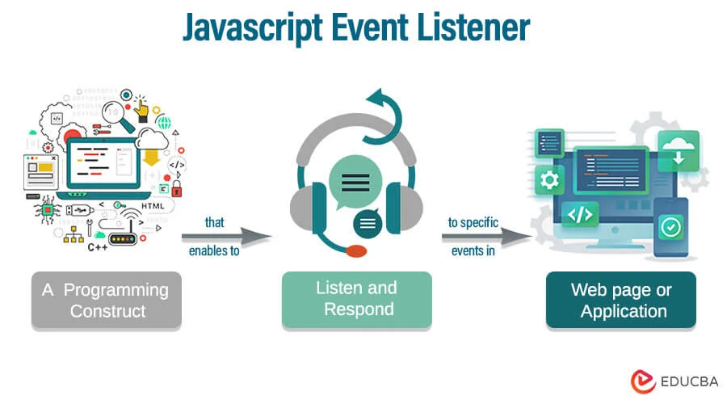

jQuerying the DOM
Learn how to use jQuery to select, modify, and animate DOM elements easily.
Explore the following resources that teach you how to manipulate the DOM with JavaScript and jQuery. Each article includes code examples and interactive images to help you learn by doing.
Learn how to use jQuery to select, modify, and animate DOM elements easily.
Understand how to use JavaScript event listeners to make your web pages interactive.
Discover best practices and common patterns for efficient DOM manipulation in real projects.